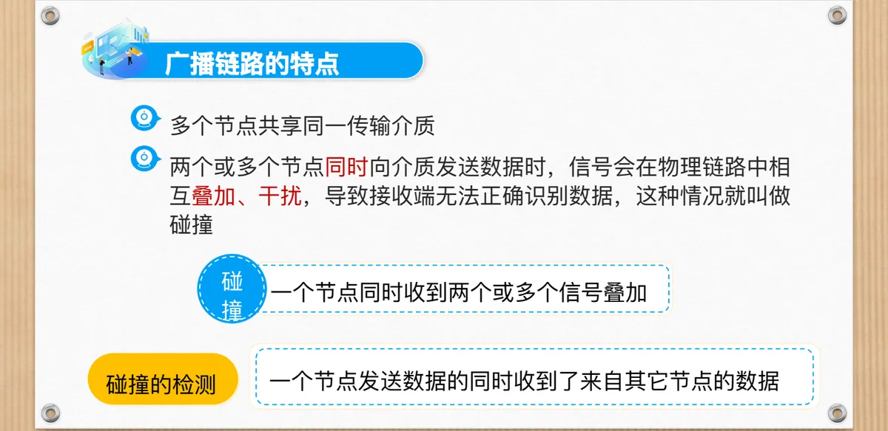
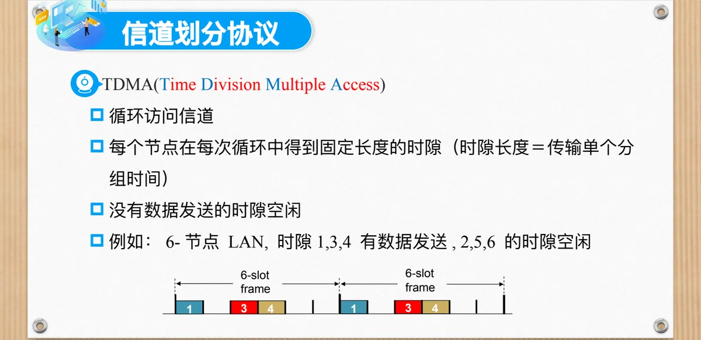
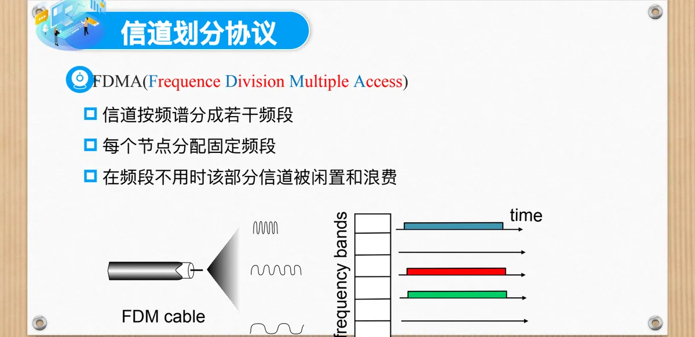
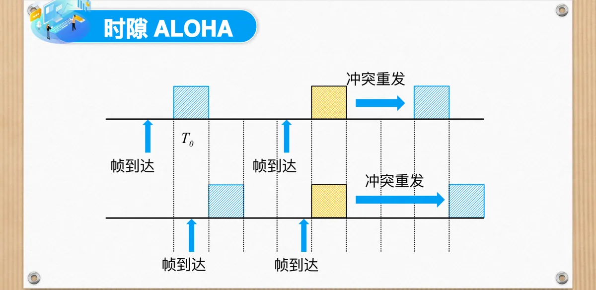
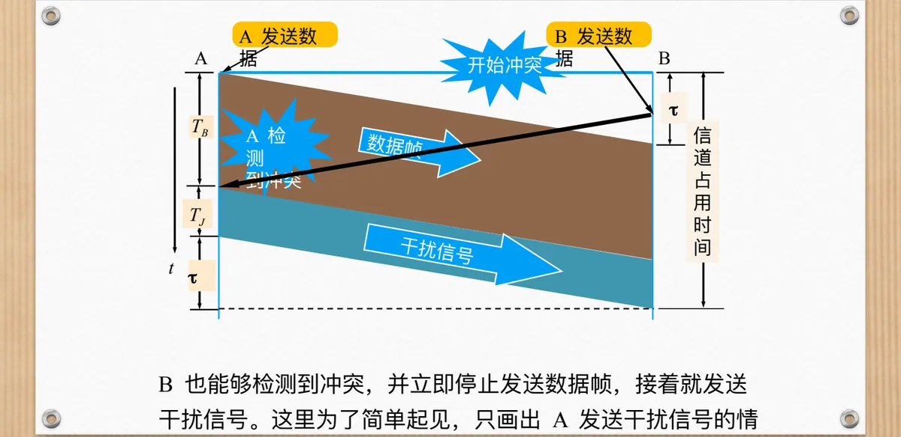
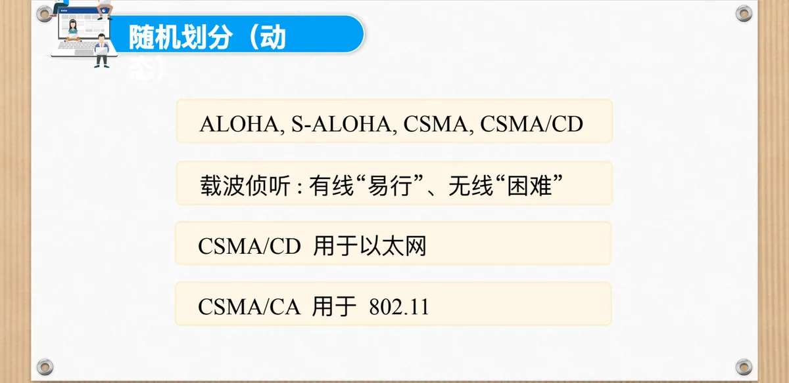

计算机通信与网络 · 第二版讲义 · 第 4 章 局域网
4.2 多路访问链路和协议
多台设备共用一条传输介质，必须有规则决定谁在什么时候发送，否则信号会在介质上叠加。本节先说明广播链路上的碰撞，再交代多址访问协议的目标与分类，然后依次展开信道划分（TDMA、FDMA、CDMA）、随机访问（ALOHA、时隙 ALOHA、CSMA、CSMA/CD）与轮流协议（轮询、令牌传递），最后比较三者的取舍。
1. 广播链路上的碰撞
4.1 节区分过广播链路与点到点链路：前者的特征是多台设备共享同一条通信信道，发送的消息会被所有设备收到，总线型以太网和无线局域网都属于这一类。共享介质带来两件麻烦事：节点发送数据时还会收到其它节点的数据；两个或更多节点同时发送，它会收到多个信号叠加的结果。
这种情况称为碰撞：两个或多个节点同时向介质发送数据，信号在物理链路中相互叠加、干扰，接收端无法正确识别数据。因此广播链路还要回答「谁有权在什么时候发送」「碰撞怎样发现、发现后怎么办」。

2. 多址访问协议：定义、目标与分类
多址访问协议（Multiple Access Protocol）是为规避数据传输碰撞而设计的协议，本质上是一个分布式算法：决定节点如何使用共享信道，即决定节点何时可以传输数据。它有一个决定问题难度的前提——有关共享信道的通信（协商）也必须使用信道本身，没有额外的信道可以协调。
（1）理想的多址访问协议
假定信道是速率为 R b/s 的广播信道，理想情况应当是：当 M 个节点有数据发送时，每个节点的吞吐量为 R/M；当只有一个节点有数据发送时，该节点的吞吐量为 R。前者要求公平，后者要求不浪费。协议还要简单、全分散控制：没有特定节点调整传输，也无须时钟同步。
（2）三类多址访问协议
按处理碰撞的思路，多址访问协议分为三类：
- 信道划分协议：把信道划分成小的「片」（时隙、频率、编码）分给节点使用；
- 随机访问协议：信道没有被分割，允许碰撞，需要碰撞恢复；
- 轮流协议：节点轮流传送，但数据量大的节点轮流更长时间。
3. 信道划分协议：时分、频分与码分
信道划分协议把信道资源切成互不重叠的「片」分给各节点，每个节点只在自己分到的那一片里发送，原理上不会与他人同时占用信道。
（1）时分多址 TDMA
时分多址 TDMA（Time Division Multiple Access）从时间上切分信道：节点循环访问信道，每个节点在每轮循环中得到一个固定长度的时隙，时隙长度等于传输单个分组的时间。课件以 6 节点局域网 LAN（Local Area Network）为例：一轮 6 个时隙构成一个 6-slot 帧。

这样可以规避冲突：用户仅在自身分配的时隙发送，发送时间完全错开，理想情况下可实现 100% 的利用率；代价是节点没有数据发送时，它的时隙空着，造成浪费。
（2）频分多址 FDMA
频分多址 FDMA（Frequency Division Multiple Access）从频率上切分信道：信道按频谱分成若干频段，每个节点分配一个固定频段，在自己的频段上发送。

FDMA 同样可以规避冲突，因为各用户的信号在不同频率范围内传输，互不干扰；利用率与 TDMA 类似，理想情况可达 100%。代价是节点没有数据要发时，分给它的频段被闲置。
（3）码分多址 CDMA
码分多址 CDMA（Code Division Multiple Access）的思路不同：所有节点在整个频段、所有时间上传输，通过编码设计区分不同节点的信号，因此完全无冲突，前提是各节点信号同步得很好且在信道上线性叠加。
4. 随机访问协议之一：ALOHA 与时隙 ALOHA
随机访问协议不切分信道：节点有数据就以信道的全部速率 R 传输，没有主节点起协调作用。因为不预先分配，两个或多个节点同时传送就会碰撞，所以它必须解决两个问题：如何检测碰撞，如何从碰撞中恢复（最常用的办法是延时后重传）。代表协议有 ALOHA、时隙 ALOHA、CSMA、CSMA/CD 与 CSMA/CA。
（1）ALOHA 网的由来与特征
ALOHA 是 Additive Link On-Line HAwaii system 的缩写，恰好也是夏威夷方言里的「你好」。ALOHA 网是计算机网络早期发展中一个著名的网络，也是第一个无线计算机网络，至今仍在运行。
群岛的位置散布在广阔海域上，为了让各站点都能与主机通信，网络拓扑采用星型结构；为了节省费用和易于组网，站点之间使用无线传输介质；无线电信道无法申请更多频率点，所有站点只能使用统一频率通过主机交换信息——都挤在同一个频率上说话，冲突自然难以避免。
（2）纯 ALOHA 的工作过程与效率
最早的 ALOHA 后来被称为纯 ALOHA：任一节点有帧需要传输就马上传输，协议完全分布式、简单，无需任何同步。
碰撞之后，当冲突被检测到时，节点在完全传完碰撞帧以后，以概率 p 重传该帧；否则等待一个帧的传输时间，再以概率 p 传输、以概率 1-p 继续等待一个帧的时间……直到成功。
设节点数为 N，任一节点在某时刻以概率 p 发送。给定节点要成功，必须同时满足三个条件：它自己在发送；它开始发送前的一个帧时间里没有其它节点开始发送；之后的一个帧时间里也没有。即：
P(给定节点成功) = P(给定节点传送)
· P(在 [t0-1, t0] 没有其它节点传送)
· P(在 [t0, t0+1] 没有其它节点传送)
= p · (1-p)^(N-1) · (1-p)^(N-1)
= p · (1-p)^(2(N-1))前后各留一个帧，是因为纯 ALOHA 没有时隙约束：任何在 t0 前后一个帧时间内开始发送的帧都会与它部分重叠，易损期长达两个帧。选择最合适的 p、让 N 趋于无穷取极限，效率为：
效率 = 1/(2e) ≈ 0.18也就是说，纯 ALOHA 最多只能把信道利用到 18% 左右。
（3）时隙 ALOHA
既然浪费来自长达两个帧的易损期，自然的改进就是把它缩短。时隙 ALOHA（Slotted ALOHA，课件中也写作 S-ALOHA）假设：所有帧等长；时间划分成相等的时隙，每个时隙可发送一帧；节点只在时隙开始时发送帧；节点在时钟上同步；两个或多个节点在一个时隙传输时，所有节点都能检测到冲突。
执行过程是：节点获取新帧后在下一个时隙传输；没有检测到冲突即成功，可在下一时隙发送新帧；检测到冲突则失败，节点在每一个随后的时隙以概率 p 重新传帧，直到成功。

帧的发送时刻被对齐到时隙边界，于是易损期从一个帧时间的两倍缩短为一个时隙，成功概率提高为：
P(给定节点成功) = P(给定节点传送) · P(没有其它节点传送)
= p · (1-p)^(N-1)同样选择最合适的 p、让 N 趋于无穷取极限，效率 = 1/e ≈ 0.37，正好是纯 ALOHA 的两倍；代价是全网需要共同时钟，即课件所说的「节点在时钟上同步」。
5. 随机访问协议之二：载波侦听多路访问 CSMA
时隙 ALOHA 利用了时钟对齐，却没有利用另一条更容易获得的信息：信道此刻是否被占用。载波侦听多路访问 CSMA（Carrier Sense Multiple Access）补上的正是这一点：传输前先监听——信道空闲就传送整个帧，信道忙就推迟传送。
（1）监听之后怎么办：三种坚持方式
非坚持 CSMA（nonpersistent CSMA）：一旦监听到信道忙（发现有其它站在发送数据），就不再坚持听下去，而是按协议算法延迟一个随机的时间后重新监听；若发现空闲，就把准备好的帧发送出去。它的变体是时隙非坚持 CSMA，只能在每个时隙开始时发送。
1 坚持 CSMA：站点要发送数据时首先侦听信道，信道正忙就持续等待，直到侦听空闲便将数据送出；若发生冲突，就等待一个随机长的时间后重新开始。「1 坚持」得名于它在信道空闲时以概率 1 发送。
P 坚持 CSMA：前半段与 1 坚持相同，区别在信道空闲时——以概率 P 发送数据，以概率 1-P 延迟一段时间 τ 后重新监听，τ 取网络中最远的端到端传播时延；若冲突，同样等待一个随机长的时间后重新开始。
三者可以直接对比：非坚持 CSMA 一旦退让，即使信道已转入空闲，它可能还在随机延时中等待，不能充分利用这段刚空闲的时间；1 坚持 CSMA 正相反，多个站点都一直听着信道，信道一空闲就可能同时发送，容易产生冲突；P 坚持 CSMA 能一定程度上克服这些缺点，但很难选择适用于各种通信量强度的 P 值，所以实际网络中常选择 1 坚持。
（2）有了载波侦听，为什么还会碰撞
答案是会，原因在于「听」本身需要时间。课件用一条 1 km 的链路说明：单程端到端传播时延记为 τ。t = 0 时 A 检测到信道空闲，开始发送；t = τ-δ 时，B 还没听到 A 的信号，判断信道空闲也开始发送；t = τ-δ/2 附近两个信号相遇，碰撞发生。碰撞之后双方还要再等一段时间才能察觉——A 直到 t = 2τ-δ 才检测到碰撞。
可见有了 CSMA，冲突仍然可能发生，根源是传播时延：节点可能侦听不到正在进行的传输。信道越长，端到端最长传播延迟越大，越容易冲突，所以局域网要规范节点的最大距离，通常在数公里之内。CSMA 可以减少冲突，但无法避免冲突。
6. 带冲突检测的载波侦听 CSMA/CD 与争用期
带冲突检测的载波侦听 CSMA/CD（Carrier Sense Multiple Access with Collision Detection）在载波侦听之上增加了一个动作：边发边听，在短时间内检测碰撞，一旦发现就立即停止传输，以减少信道浪费。它对应的生活规则是：如果他人开始说话，则停止说话。
冲突检测在不同介质上难度差别很大。有线局域网中比较容易：测量信号强度，比较收、发的信号；无线局域网中比较困难：节点传输时接收器是关闭的，没法一边发一边听。
仅仅停止发送还不够。发送数据的站发现碰撞后，除了立即停止发送数据，还要继续发送若干比特的人为干扰信号（jamming signal），这就是强化碰撞，目的是让所有用户都知道已经发生了碰撞。

从碰撞发生到发送方确知碰撞，有一个时间界限：最先发送数据帧的站，发送后至多经过 2τ（两倍的端到端往返时延）就能知道数据帧是否遭受碰撞。以太网把这个 2τ 称为争用期，也称碰撞窗口；反过来读就是，经过争用期还没有检测到碰撞，才能肯定这次发送不会碰撞。争用期由端到端的传播时延决定。
7. 轮流协议：轮询与令牌传递
信道划分与随机访问各自解决了一半问题，轮流协议试图把两者的长处合到一起。课件对前两类的总结是：信道划分协议重负荷时有效、公平、利用率高，轻负荷时却连一个活动节点也只能分到 1/N 带宽，还要承受访问延时；随机访问协议相反，轻负荷时只有一个节点也能充分利用信道，重负荷下碰撞开销却越来越大。轮流协议要在两者之间寻求最佳方案。
其一是轮询协议：主节点邀请从节点轮流传输，得到邀请的从节点才能发送。它避免了碰撞，但要关注三个问题——轮询本身的开销、等待时间，以及单点失效：主节点一旦故障，整个网络的协调就无从谈起。
其二是令牌传递协议：让令牌（token）报文依次通过各个结点，只有持有令牌的结点才能发送数据，没有数据可发的结点把令牌传给下一个。它同样要关注令牌的开销、等待时间和单点失效，只不过关键变成了令牌本身：令牌丢失或损坏，网络就会失去秩序。
8. 三类多址访问协议总览
对于共享介质能做些什么？本节讲过的协议按处理碰撞的思路可以归成三条路线，课件用一句话总结了它们：信道划分基于时间、频率和编码，随机划分是动态的，轮流则靠主节点轮询或令牌传递。

三条路线各有定位：信道划分适合重负荷，随机访问适合轻负荷，轮流协议试图兼顾两者。课件还点出了两种随机访问协议的去向——CSMA/CD 用于以太网，无线局域网用的则是 CSMA/CA（Carrier Sense Multiple Access with Collision Avoidance，冲突避免），因为无线环境中传输时接收器关闭、冲突检测困难；载波侦听在有线中「易行」，在无线中「困难」。
| 类别 | 资源怎样分配 | 轻负荷时 | 重负荷时 | 主要代价 |
|---|---|---|---|---|
| 信道划分协议 | 静态切成时隙、频段或编码 | 只有 1/N 带宽，空闲的「片」浪费 | 有效、公平，理想可达 100% | 空闲资源浪费、访问延时 |
| 随机访问协议 | 不划分，全速率 R 发送，碰撞后恢复 | 单节点时充分利用信道 | 碰撞开销大 | 碰撞检测与重传 |
| 轮流协议 | 主节点轮询或令牌传递 | 效率高 | 有序，避免碰撞 | 开销、等待、单点失效 |
本节小结
- 广播链路上多台设备共享同一条信道，两个或多个节点同时发送就会碰撞：信号叠加、干扰，接收端无法正确识别；因此需要多址访问协议规定节点何时发送，而节点之间的「协商」也只能用这条信道；
- 理想的多址访问协议既要公平（M 个节点有数据时各得 R/M），又不浪费（只有一个节点有数据时用满 R），还要简单、全分散控制——没有中心节点与时钟同步；
- 信道划分协议用静态分配避免碰撞：TDMA 切时间、FDMA 切频率、CDMA 靠编码区分信号；理想利用率可达 100%，但空闲资源被浪费，只有一个活动节点时也只有 1/N 带宽；
- 随机访问协议不划分信道，节点以全部速率 R 发送：纯 ALOHA 随时发送，效率 1/(2e) ≈ 0.18；时隙 ALOHA 把易损期缩短为一个时隙，效率提高到 1/e ≈ 0.37，代价是时钟同步；CSMA 先听后发，但传播时延使它仍无法避免碰撞，节点最大距离因此限制在数公里之内；
- CSMA/CD 边发边听，短时间内检测到碰撞就立即停止发送并发出干扰信号强化碰撞；最先发送的站至多经过 2τ 就能确知是否碰撞，以太网把 2τ 称为争用期（碰撞窗口）。冲突检测有线易、无线难，无线改用 CSMA/CA：它用于 802.11，CSMA/CD 用于以太网，二者分别在 4.3 与 4.4 节展开；
- 轮流协议在重负荷与轻负荷之间取折中：轮询由主节点邀请从节点轮流传输，令牌传递让令牌依次经过各结点；两者都有额外开销与单点失效风险。